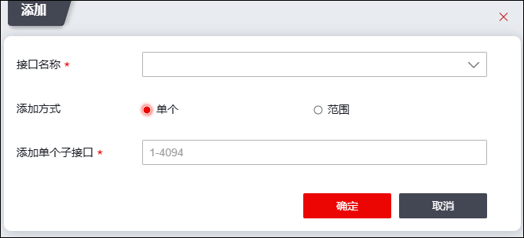

TAG子接口通过将物理口虚拟为多个逻辑接口的方式实现了基于标签的分流，为流量到特定的VLAN奠定了基础。TAG子接口处理报文时根据报文的标签遍历所有子接口，选择匹配的子接口作为入口。
在配置TAG子接口之前，需要先进行如下步骤：
l配置子接口对应物理接口的工作模式为路由模式，关于接口属性的配置具体请参见 配置接口基本属性。
|
² 不能在同一个物理接口上同时添加MAC子接口和TAG子接口。 |

| 步骤1 | 选择 ，激活“TAG子接口”页签。 |
| 步骤2 | 添加子接口。 |
1）点击“添加”添加TAG子接口，界面如下图所示。

在添加TAG子接口时，各项参数的具体说明如下表所示。
参数 |
说明 |
|---|---|
接口名称 |
选择要在其下添加子接口的物理接口，该接口必须为路由接口。 说明： 该接口必须为路由接口。 |
添加方式 |
设置添加MAC子接口的方式，可选项：单个、范围。 |
添加单个子接口 |
“添加方式”选择“单个”，显示该参数。 添加单个子接口的ID号，取值范围为1-4094。添加后，子接口的名称为“以太网接口名.子接口ID”，如feth1.2，表示以太网接口feth1的ID号为2的子接口。 |
开始IP-结束IP |
“添加方式”选择“范围”，显示该参数。 一次性在某个物理接口下添加多个名称连续的子接口。取值范围为1-4094。如在feth1接口下，“开始IP”设置为“2”，“结束IP”设置为“10”，则一次性添加feth1.2、feth1.3、feth1.4……feth1.10。 说明： 一个物理接口下只能添加32个子接口。 |
2）点击【确定】按钮完成TAG子接口的添加。添加完成后，TAG子接口默认处于“开启”状态。
| 步骤3 | 设置TAG子接口属性。 |
选中已添加的TAG子接口所在行，点击上方『编辑』图标，可修改TAG子接口属性。
关于接口属性参数的解释具体请参见 物理接口。参数设置完成后，点击【确定】按钮，完成TAG子接口属性的设定。